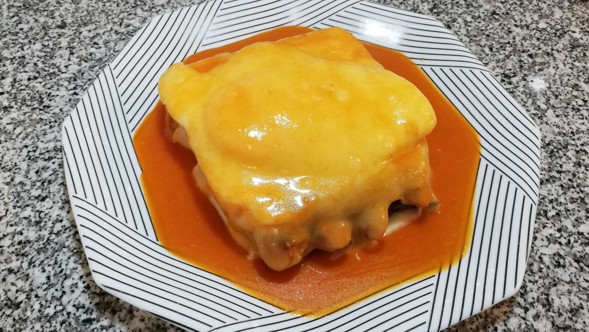

Francesinha a moda do Porto

Description
The francesinha in Portugal can be considered a sandwich and is basically three loaves of bread stuffed with meat (ham, steak, sausage, etc.).
On top theres a melted cheese that is placed on a deep plate.
Ingredients
- 6 slices of bread
- 8 slices of cheese
- 2 small beef steaks
- 2 fresh sausages
- 2 sausages
- 2 slices of ham
- Salt and pepper to taste
For the sauce
- 1 onion
- 4 dl of beer
- 3 tablespoons of tomato pulp
- 0,5 dl of brandy
- 0,5 dl of Port wine
- 1 tablespoon margarine
- 1 tablespoon of cornstarch flour
- 1 cube of broth
- 1 bay leaf
- Milk to taste
- Salt and spice to taste